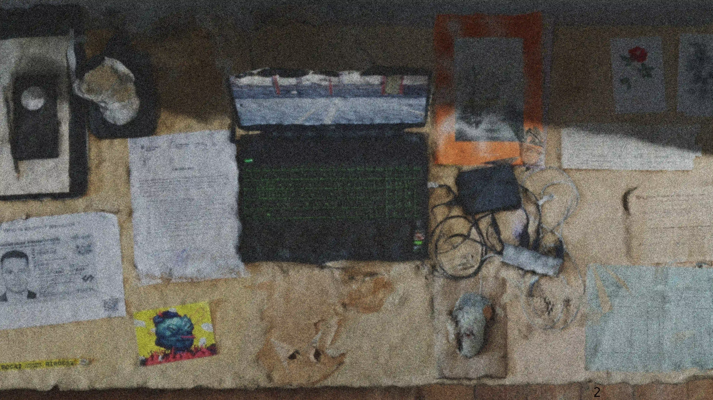
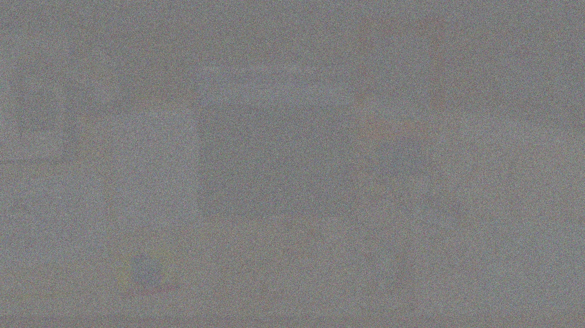

Seit 2024: wissenschaftliche Mitarbeiterin am Lehrstuhl Darstellungslehre, Fakultät Landschaft und Architektur, TU Dresden
Künstlerisches Promotionsprojekt zu XR
künstlerisch freischaffend
2021 - 2023: Softwareentwicklerin bei Robotron Datenbank-Software GmbH
2015 - 2021: Studium der Bildenden Kunst, Diplom, Hochschule für Bildende Künste Dresden
2008 - 2015:Studium der Mathematik, Diplom, Humboldt-Universität zu Berlin
* 1989